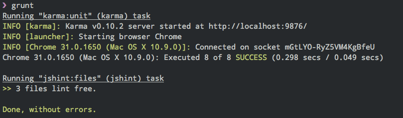
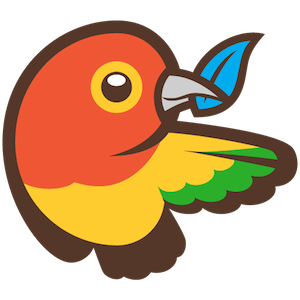
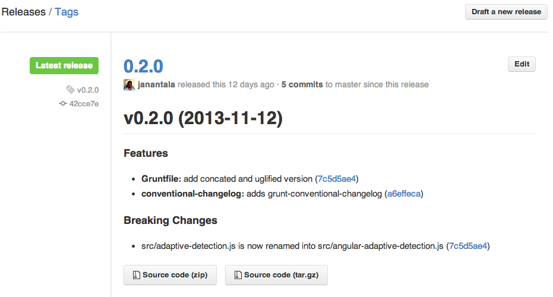
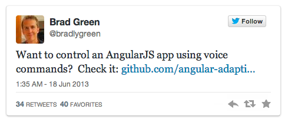
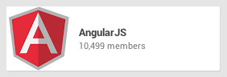
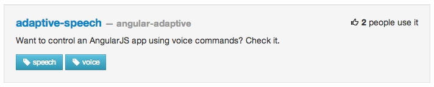

By Jan Antala / @janantala
WebElement #25 feat. Slovak AngularJS #3
Bratislava, 5th December 2013
Hello, I am Jan Antala

...Okay, lets get it started!
Lets create a new repo

Naming Conventions
angular-[optional-namespace]-[thing-name]-[optional-thing-type]
Example:
angular-qr
angular-adaptive-speech
Specification for reusable AngularJS components: angular-component-spec
Which license?
Choosing an OSS license doesn’t need to be scary
AngularJS component
src/
angular-adaptive-detection.js
test/
test.conf.js
unit.spec.js
.bowerrc
.gitignore
.travis.yml
CHANGELOG.md
CONTRIBUTING.md
Gruntfile.js
LICENSE
angular-adaptive-detection.js
angular-adaptive-detection.min.js
bower.json
package.json
Seed for reusable Angular components: angular-component-seed

Gruntfile.js
module.exports = function (grunt) {
grunt.loadNpmTasks('grunt-task');
grunt.registerTask('default', ['task1', 'task2']);
// Project configuration.
grunt.initConfig({
pkg: grunt.file.readJSON('package.json'),
task1: {
options: {
...
}
}
...
});
};
Load tasks
Pro tip:
Load multiple grunt tasks using globbing patterns
load-grunt-tasks
Before:
grunt.loadNpmTasks('grunt-karma');
grunt.loadNpmTasks('grunt-contrib-jshint');
grunt.loadNpmTasks('grunt-concurrent');
After:
require('load-grunt-tasks')(grunt);

AngularJS Module
(function () {
'use strict';
var adaptive = angular.module('adaptive.detection', []);
// ...
});
Inject the module into your app
angular.module('myApp', ['adaptive.detection']);
Lets create a provider
adaptive.provider('$detection', [function() {
this.setUserAgent = function(userAgent) {
this.userAgent = userAgent;
};
this.$get = function() {
...
return {
...
}
};
}]);
Configure $detectionProvider
angular.module('myApp').config(function($detectionProvider){
$detectionProvider.setUserAgent('angular');
});
Service
this.$get = function() {
var userAgent = this.userAgent;
return {
getUserAgent: function(){
return userAgent;
},
isiOS: function(){
return (/(iPad|iPhone|iPod)/gi).test(userAgent);
},
isAndroid: function(){
return (/(Android)/gi).test(userAgent);
}
}
};
Inject the service into your controller
angular.module('myApp')
.controller('MainCtrl', function($scope, $detection){
$scope.detection = $detection;
});
Showtime
$detection.isiOS(): {{detection.isiOS()}}
$detection.isAndroid(): {{detection.isAndroid()}}
$detection.getUserAgent():
{{detection.getUserAgent()}}
Always include live demo in your open source repository!
You can use gh-pages branch.
Pro tip:
To start a local web server type
python -m SimpleHTTPServer
or use
grunt-contrib-connect
Tests

test.conf.js
module.exports = function(config) {
config.set({
basePath: '..',
files: [
'bower_components/angular/angular.js',
'bower_components/angular-mocks/angular-mocks.js',
'src/angular-adaptive-detection.js',
'test/*.spec.js'
],
frameworks: ['jasmine'],
singleRun: true,
browsers: [ 'Chrome' ]
});
};
Grunt plugin for Karma
var karmaConfig = function(configFile, customOptions) {
var options = { configFile: configFile, keepalive: true };
var travisOptions = process.env.TRAVIS && { browsers: ['Firefox'], reporters: 'dots' };
return grunt.util._.extend(options, customOptions, travisOptions);
};
karma: {
unit: {
options: karmaConfig('test/test.conf.js')
}
},
unit.spec.js
describe('adaptive.detection', function(){
describe('provider functionality', function() {
// ...
});
describe('public methods', function() {
// ...
});
// ...
});
Provider functionality
var detection;
beforeEach(module('adaptive.detection', function($detectionProvider) {
detection = $detectionProvider;
}));
it('should be defined', inject(function() {
expect(detection).toBeDefined();
}));
it('should have setUserAgent method', inject(function() {
expect(detection.setUserAgent).toBeDefined();
expect(typeof detection.setUserAgent).toBe('function');
}));
it('should have $get method', inject(function() {
expect(detection.$get).toBeDefined();
expect(typeof detection.$get).toBe('function');
}));
Public methods
it('should be defined', inject(function($detection) {
expect($detection).toBeDefined();
}));
it('should have public methods', inject(function($detection) {
expect($detection.getUserAgent).toBeDefined();
expect($detection.isiOS).toBeDefined();
expect($detection.isAndroid).toBeDefined();
expect(typeof $detection.getUserAgent).toBe('function');
expect(typeof $detection.isiOS).toBe('function');
expect(typeof $detection.isAndroid).toBe('function');
}));
Test Android browser
describe('test Android', function() {
beforeEach(module('adaptive.detection', function($detectionProvider) {
$detectionProvider.setUserAgent('Android');
}));
it('should detect Android browser', inject(function($detection) {
expect($detection.isAndroid()).toEqual(true);
expect($detection.isiOS()).toEqual(false);
}));
});
Run grunt test
Documentation
Readme.md
- Requirements
- Installation
- Usage
- Contributing (nobody reads)
- License
ngdoc
Writing AngularJS Documentation
Extends jsdoc
All the docs are stored inline in the source code
and so is kept in sync as the code changes.

How to create api docs?
I have a grunt task for that!
Commit Message Conventions

Format of the commit message
<type>(<scope>): <subject>
<BLANK LINE>
<body>
<BLANK LINE>
<footer>
Type
- feat (feature)
- fix (bug fix)
- docs (documentation)
- style (formatting, missing semi colons, ...)
- refactor
- test (when adding missing tests)
- chore (maintain)
Subject
- use imperative, present tense: “change” not “changed” nor “changes”
- don't capitalize first letter
- no dot (.) at the end
Message body
Includes motivation for the change and contrasts with previous behavior
Message footer
Breaking changes
Include description of the change, justification and migration notes
Referencing issues
Closed bugs should be listed on a separate line in the footer prefixed with "Closes" keyword.
Closes #123, #245, #992
Example:
feat($browser): onUrlChange event (popstate/hashchange/polling)
Added new event to $browser:
- forward popstate event if available
- forward hashchange event if popstate not available
- do polling when neither popstate nor hashchange available
Breaks $browser.onHashChange, which was removed (use onUrlChange instead)
Continuous Integration

Travis CI
.travis.yml
language: node_js
node_js:
- "0.10"
before_install:
- export DISPLAY=:99.0
- sh -e /etc/init.d/xvfb start
- npm install -g bower grunt-cli
- npm install
- bower install
script: "grunt"

Pro tip:
To prevent your push from being built
add [ci skip] to the commit message.
Release
Bower
Registering packages
bower register <my-package-name> <git-endpoint>
bower register angular-adaptive-detection
git://github.com/angular-adaptive/adaptive-detection.git
Install package
from bower registry, github or git endpoint
bower install angular-adaptive-detection
bower install angular-adaptive/adaptive-detection
bower install git://github.com/angular-adaptive/adaptive-detection.git
Changelog
I have a grunt task for that!
changelog: {
options: {
dest: 'CHANGELOG.md'
}
},
Bump versions
bump: {
files: ['package.json', 'bower.json'],
updateConfigs: ['pkg']
},
Concat and uglify
uglify: {
options: { preserveComments: 'some' },
dist: {
src: '<%= pkg.name %>.js',
dest: '<%= pkg.name %>.min.js'
}
},
concat: {
options: {
process: true,
banner: '<%= meta.banner %>\n\n'
},
dist: {
src: 'src/<%= pkg.name %>.js',
dest: '<%= pkg.name %>.js'
}
},
Draft a new version...
Promotion

mention @AngularJS
hashtag #AngularJS
Google+
ngModules
Join to the open source community!
Thanks!
Made with love by Jan Antala
Slides:
janantala.github.io/slides/how-to-build-an-open-source-angularjs-module